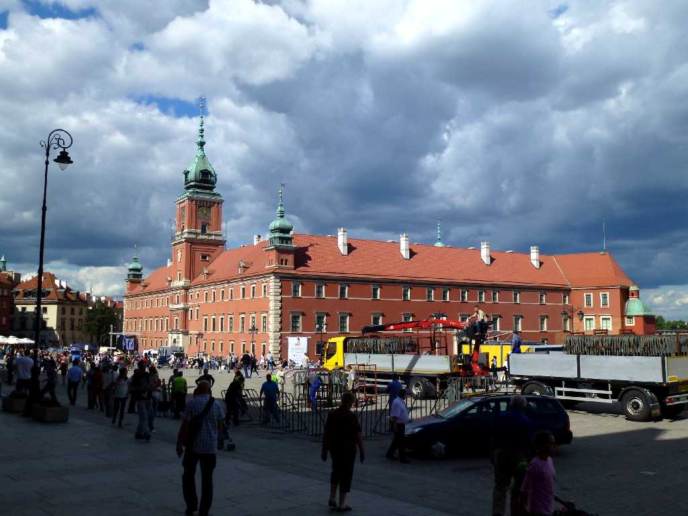
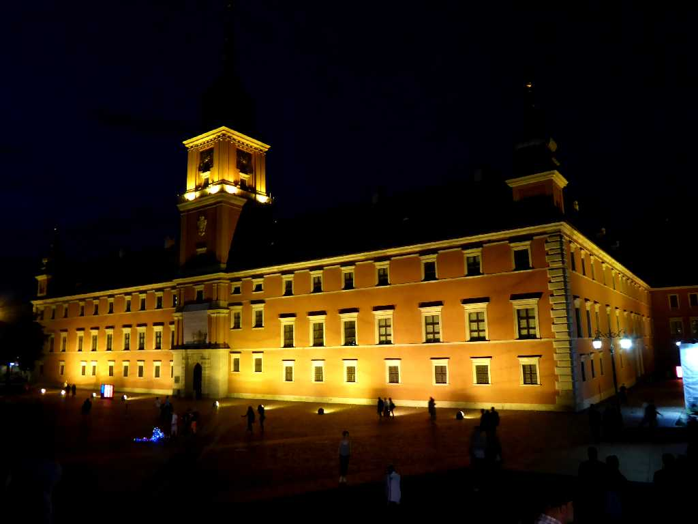
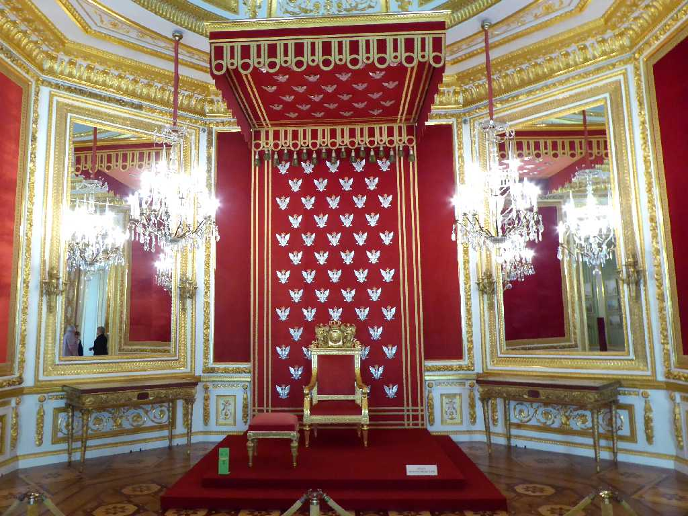

Zamek Królewski w Warszawie Warsaw
８０日間世界一周鉄道の旅２７日目ポーランド王国の首都がクラクフからワルシャワに遷都された１６世紀に創られたワルシャワ旧王宮

Night View Zamek Królewski w Warszawie
ポーランド周遊３,５００㎞バスの旅で６年ぷりのワルシャワ再訪問

Tron Zamek Królewski w Warszawie
旧王宮内の王座